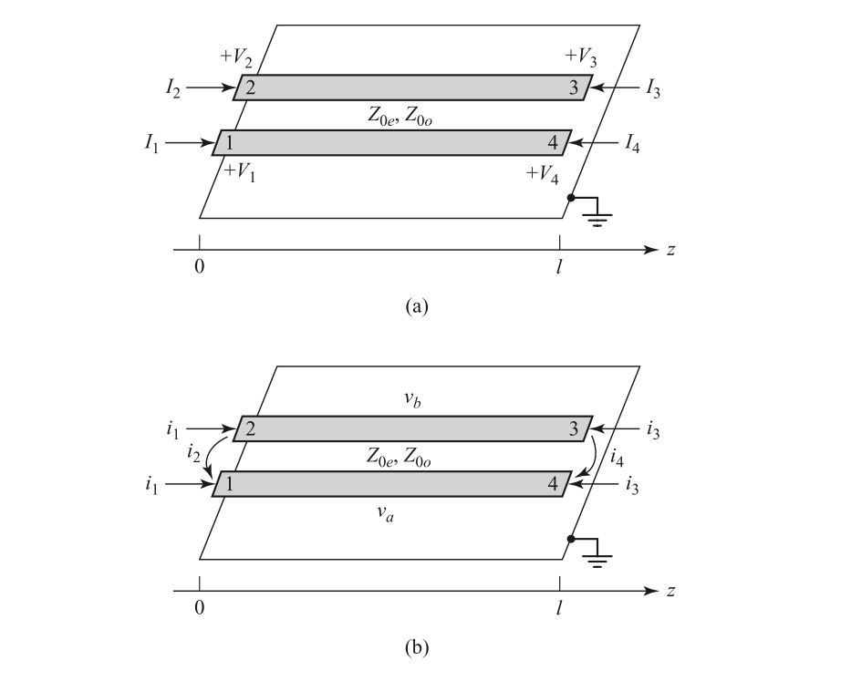
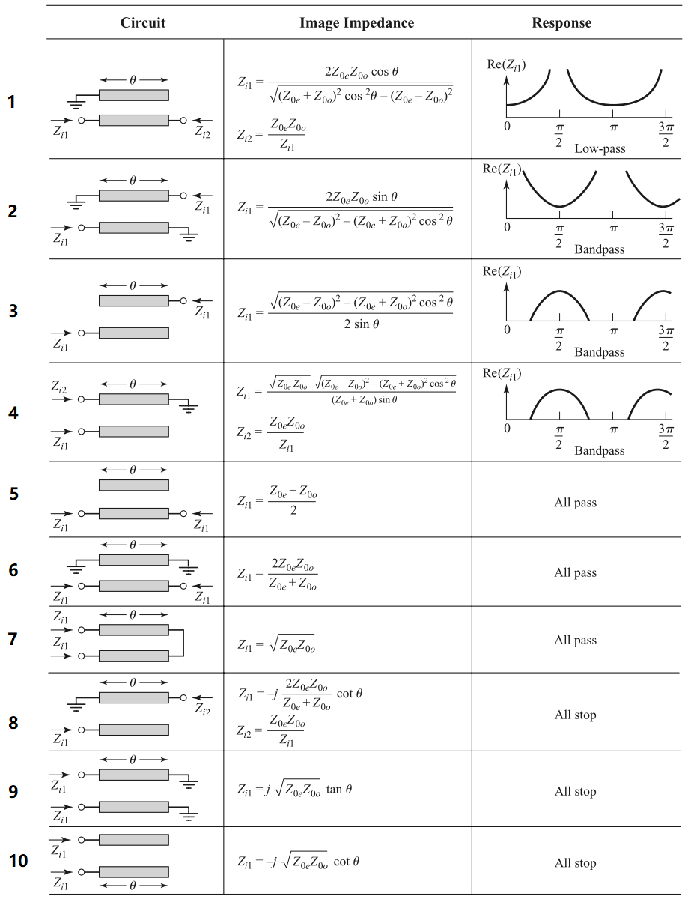
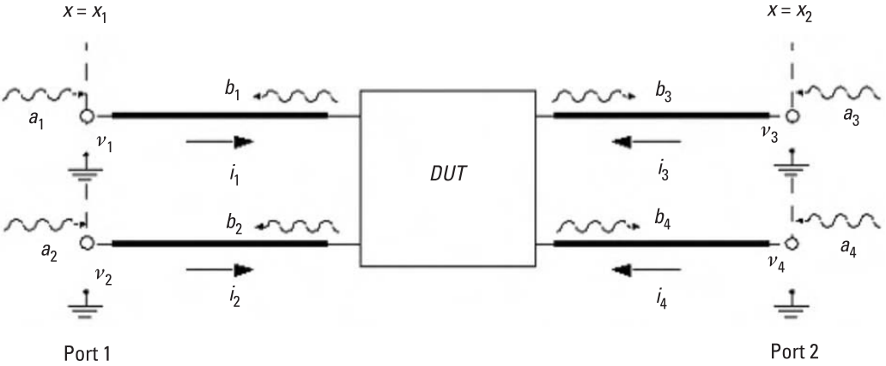
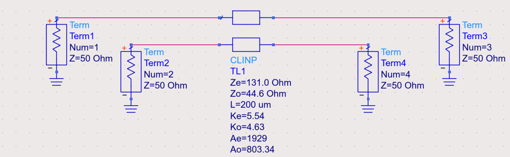
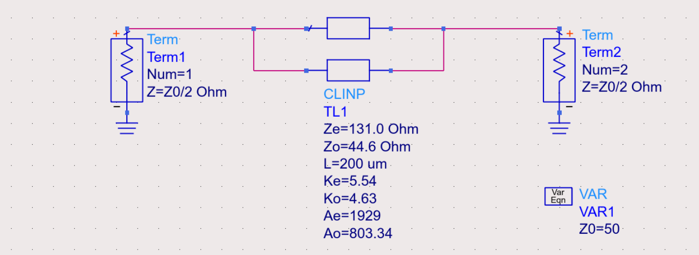
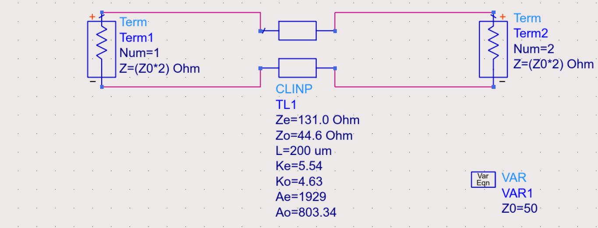

Coupled Transmission Line and Its Applications
This article will cover
- Calculation of Z and Y parameters of coupled transmission line.
- Different configuration of the coupled transmission line used as two-port network.
- Conversion between the standard S parameter and the mixed-mode S parameter.
Coupled Transmission Line Formulation
The Z parameter of a lossless transmission line is:
where $\theta=\beta l$ and $Z_0$ is the characteristic impedance.
Method 1
The schematic used for analysis is

where $v_a^1(0)$ represent the voltage induced by current $i_1$ at position 0 of conductor a. The current relation between the normal and the mixed-mode is:
Combine two equations, we have
Symmetry can be used to derive other parameters.
Method 2
The mixed-mode S parameter of the coupled transmission line can be written as:
Because the line is TEM, the propagation constant and phase velocity are the same for both of these modes $v_p=\omega/\beta=1/\sqrt{L_eC_e}=1/\sqrt{L_oC_o}$.
With the conversion formula listed in Appendix, we may write the standard S parameter as:
where $Z_p=(Z_{0e}+Z_{0o})/2,Z_m=(Z_{0e}-Z_{0o})/2$. Note that the port definition of port 3 and port 4 are opposite in Appendix and the aforementioned analysis. To make the conclusion compatible, the transformation is modified as
The additional matrix $\mathbf{T}$ is used to swap port sequence.
The Y parameter can be expressed as
where $Y_p=(Y_{0o}+Y_{0e})/2,Y_m=(Y_{0o}-Y_{0e})/2$.
Two-Port Configuration

Type 3
Port 2 open
Port 4 open
Type 5
Port 2 open
Port 3 open
Type 6
Port 2 short
Port 3 short
Type 7
Port 2-3 connected
Type 8
Port 2 short
Port 4 open
It is an all-stop filter. An intuitive understanding is that when applied at the input, the signal is divided to the through and coupled ports, got reflected at these ports with open/short terminations, and out-of-phase combined at the isolation port, resulting in zero transmissions at all frequencies.
Appendix
Conversion Between the Standard S Parameter and Mixed-Mode S Parameter
Numbering of the ports is as follows:

The standard S parameter ($\mathbf{S^{std}}$) is
The mixed-mode S parameter ($\mathbf{S^{mm}}$) is:
The relationship between the two is:
Conversion Between the Standard Z Parameter and Mixed-Mode Z Parameter
For the full circuit, we may write
This is different from the half circuit analysis. The above equations can be put into matrix form.
which leads to
Instead if half circuit is used, we have
The result is modified to be the same as the S parameter.
Mathematica Derivation
Calculation of standard S parameter
1 | Zmm = ( { |
Derivation of type 6
1 | St = ( { |
Derivation of type 7
1 | St = ( { |
Parameter Extraction of the Coupled Transmission Line
Method 1
When configured in a way like this

The S parameter of it should appear like
1 | S = [a, b, c, d |
It is then converted using Matlab, as
1 | polar2complex = @(mag, pha) mag .* exp(1i*pha*pi/180); |
Method 2
Alternatively, the mixed-mode parameter can be obtained from direct simulation. For the even/common mode

For the odd/differential mode

Note that the port impedance is changed accordingly.
Reference
For the derivation of coupled transmission line, Wilkinson power divider, quadrature hybrid, refer to
- D. M. Pozar, Microwave Engineering. NJ, Hoboken: Wiley, 1998.
For the conversion between the standard S parameter and mixed-mode S parameter, refer to
- W. R. Eisenstadt, B. Stengel and B. M. Thompson, Microwave Differential Circuit Design Using Mixed-Mode S-Parameters. Norwood: Artech House, 2006
- Post link: https://triblemany.github.io/archives/865ebedb/coupled-transmission-line.html
- Copyright Notice: All articles in this blog are licensed under BY-NC-SA unless stating additionally.